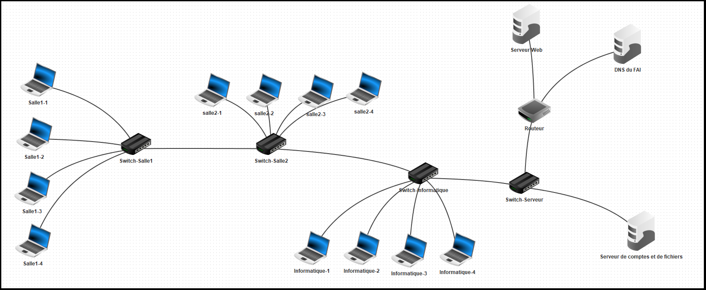
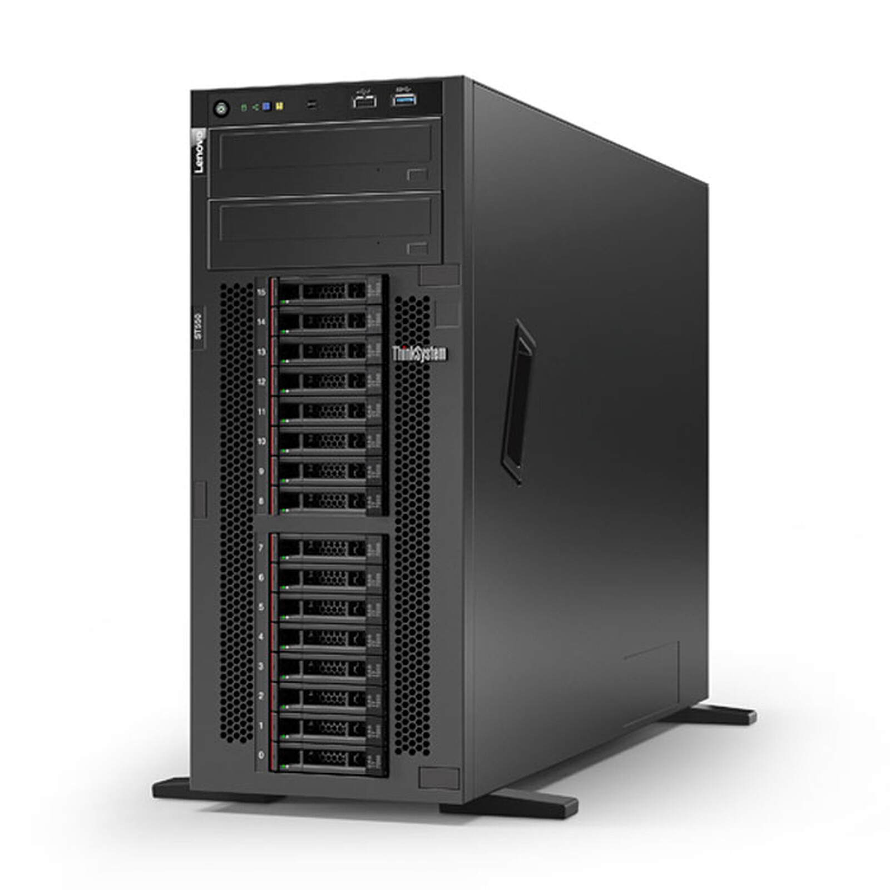
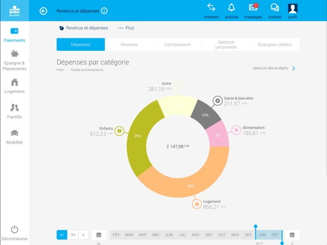

Mes Projets

Recherche sur la conception et la mise en place d'un reseau local
il faillait faire des recherches sur la conception et la mise en place d'un reseau local pour l'universite Gamal Abdel Nasser de Conakry

Administration d'un serveur sous linux
ce fut un projet donné par notre professeur en administration reseau sous linux ( la distribution debian ). il s'agissait d'installer , de configurer et d'administrer un serveur sur une machine bureautique pourqu'il puisse avoir partage de fichier avec une machine cliente , creation et gestion de base de donnees avec phpMyadmin...

conception d'une application en symfony pour la mini gestion d'une banque
une application qui permet de gérer l’agence d’une banque, les clients ainsi que les comptes bancaires des clients.